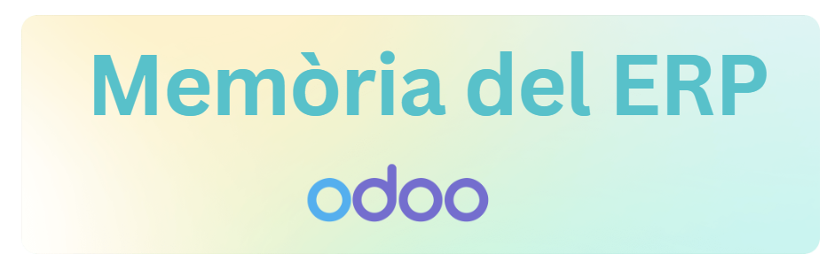
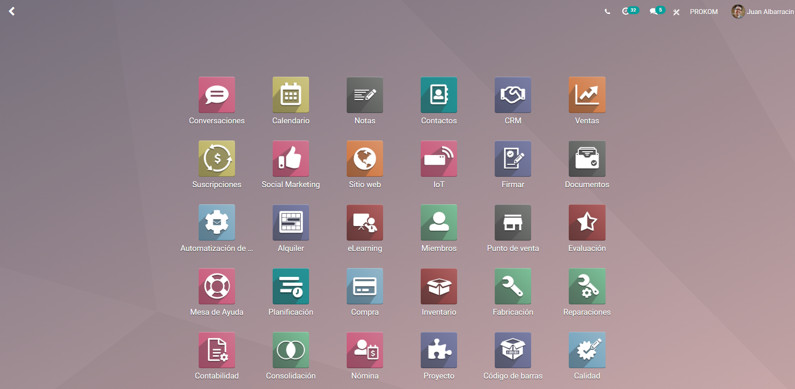

Pràctica 3 – Pràctica ODOO

Pol Gonzalez
Juan Flores
Ferran Moyano
1 DAMA-Matí 2022/23
Llenguatges de marques
ÍNDEX
1. Descripció de l’ERP 2
1.1 Aspectes bàsics que el caracteritzen: 3
1.2. Funcionalitats principals: 4
2. Fitxa tècnica 5
3. Mòduls disponibles: descripció de cadascun d’ells 6
4. Desenvolupament de nous mòduls 8
5. Conclusions i opinió sobre l’ERP en què heu treballat. 9
1. Descripció de l’ERP
- ODDO és un sistema ERP (Enterprise Resource Planning)
|
L'aplicació és de codi obert, aquesta ajuda a les empreses a gestionar les seves operacions empresarials, incloent-hi la gestió de projectes, finances, vendes, inventari, fabricació i recursos humans.
A continuació, descriure els aspectes bàsics que caracteritzen ODDO i les seves funcionalitats principals:
1.1 Aspectes bàsics que el caracteritzen:
- ODDO és un sistema ERP modular que ofereix una ampla gamma de funcionalitats per satisfer les necessitats específiques de les empreses. Es tracta d'un sistema escalable que permet als usuaris adaptar la seva funcionalitat a les necessitats en constant evolució de l'empresa.
- Està basat en una arquitectura de núvol que permet als usuaris accedir al sistema des de qualsevol lloc i en qualsevol moment. Això fa que sigui una opció ideal per a empreses amb equips distribuïts geogràficament.
- És una solució ERP de codi obert, el que significa que els usuaris poden personalitzar el sistema segons les seves necessitats específiques. Això també significa que els usuaris poden compartir el codi font amb altres desenvolupadors per millorar el sistema o desenvolupar noves funcionalitats.
- ODDO té una interfície d'usuari intuitiva que fa que sigui fàcil per als usuaris navegar pel sistema i accedir a les dades que necessiten. La interfície d'usuari també és personalitzable, de manera que els usuaris poden personalit
1.2. Funcionalitats principals:
- Gestió de projectes: Ofereix funcionalitats per gestionar projectes, incloent-hi la planificació, el seguiment i la gestió dels recursos del projecte. Això significa que els usuaris poden crear un pla de projecte, assignar tasques i recursos a equips, fer un seguiment del progrés del projecte en temps real i obtenir informes detallats sobre l'estat del projecte.
- Gestió financera: Gestiona les finances de l'empresa, incloent-hi la comptabilitat, la facturació, la gestió de comptes i la gestió de despeses. Això significa que els usuaris poden crear i enviar factures, fer un seguiment de les despeses de l'empresa, gestionar els comptes bancaris i generar informes financers personalitzats per ajudar a la presa de decisions empresarials.
- Gestió de vendes: També pot gestionar el cicle de vida de les vendes, incloent-hi la gestió de l'oportunitat de vendes, la gestió de cotitzacions, la gestió de comandes i la gestió de lliuraments. Això significa que els usuaris poden fer un seguiment dels clients i la seva activitat de compra, crear i enviar cotitzacions, gestionar comandes i lliuraments, i generar informes de vendes.
- Gestió de l'inventari: Ofereix funcionalitats per gestionar l'inventari de l'empresa, incloent-hi la gestió de la producció, la gestió del magatzem i la gestió de la cadena de subministrament. Això significa que els usuaris poden controlar l'estoc dels productes, fer un seguiment de la producció i dels materials utilitzats, gestionar els magatzems i els moviments d'estoc, i coordinar la cadena de subministrament.
- Gestió de recursos humans: Per finalitzar, té la capacitat de gestionar els recursos humans de l'empresa, incloent-hi la gestió de nòmines, la gestió de les vacances i les absències, la gestió de les avaluacions del rendiment i la gestió de les dades dels empleats. Això significa que els usuaris poden gestionar la informació dels empleats, crear i enviar nòmines, fer un seguiment de les vacances i les absències, avaluar el rendiment dels empleats i generar informes dels recursos humans.
2. Fitxa tècnica
- Nom de l’ERP: Odoo (abans anomenat OpenERP)
- URL de l’ERP: https://www.odoo.com
- Empresa o organització encarregada del seu desenvolupament: Odoo S.A.
- Any de creació: 2005
- País de desenvolupament: Bèlgica
- Tipus de llicència de l’ERP: Llicència LGPL (Lesser General Public License) versió 3
- Plataformes en les quals pot funcionar: Linux, MacOS i Windows
- És online o té una versió online: Odoo té una versió online, així com també una versió descarregable per instal·lar localment en un servidor.
- Versions de l’ERP de la primera a l’actual amb la seva data de llançament: La primera versió d'Odoo (OpenERP) es va llançar el 2005. La versió actual és la versió 16.0, que es va llançar el setembre de 2021.
- Llenguatge o llenguatges de programació en què està desenvolupat: Odoo està escrit en Python, JavaScript i XML.
- Requisits tècnics per la seva instal·lació i execució: Per instal·lar Odoo en un servidor local, es requereixen els següents requisits tècnics mínims:
- Sistema operatiu Linux (Ubuntu, Debian, CentOS, Fedora, etc.)
- Servidor web com ara Apache o Nginx
- Base de dades PostgreSQL
- Python 3.7 o superior
- Algunes llibreries Python (com ara lxml, psycopg2, etc.)
- Inclou CRM: Sí, Odoo inclou un mòdul de CRM (Customer Relationship Management).
- És completament gratuït o té alguna opció que és de pagament: Odoo és un ERP de codi obert i és completament gratuït per a la seva descàrrega i ús. No obstant això, també ofereix un conjunt de funcions avançades i mòduls addicionals que són de pagament. El preu dels mòduls addicionals depèn de les funcions que ofereixen i es cobra per usuari i mes.
3. Mòduls disponibles: descripció de cadascun d’ells
- Vendes: Aquest mòdul permet als usuaris crear pressupostos, comandes i factures per als clients.
- Inventari: Aquest mòdul ajuda els usuaris a gestionar el seu inventari, realitzar transferències de magatzem, realitzar ajustaments d'estoc i efectuar operacions d'inventari.
- Fabricació: Aquest mòdul s'utilitza per gestionar el procés de fabricació, des de la creació de l'ordre de fabricació fins a la finalització de la producció.
- Compres: Aquest mòdul ajuda als usuaris a crear comandes de compra, rebre les entregues i facturar les compres realitzades.
- Comptabilitat: Aquest mòdul ajuda a la gestió financera de l'empresa, permetent la creació de factures i registres comptables.
- CRM: Aquest mòdul ajuda als usuaris a gestionar les relacions amb els clients, permetent crear campanyes de màrqueting, registrar activitats dels clients i realitzar anàlisis de vendes.
- Projectes: Aquest mòdul ajuda a la gestió de projectes, permetent crear tasques, assignar-les a membres de l'equip i controlar el temps de dedicació.
- RRHH: Aquest mòdul ajuda a la gestió dels recursos humans de l'empresa, permetent gestionar nòmines, contractes i avaluacions del rendiment.
- Punt de venda: Aquest mòdul ajuda a la gestió de les vendes realitzades en una botiga física, permetent la gestió de caixes i la creació de tiquets de venda.
- Subscripcions: Aquest mòdul permet als usuaris crear plans de subscripció i facturar als clients de forma recurrent.
4. Desenvolupament de nous mòduls
Per desenvolupar nous mòduls per a ODOO, es necessiten coneixements de programació Python i la capacitat d'utilitzar les funcionalitats proporcionades per la plataforma ODOO. ODOO proporciona una interfície d'usuari per als desenvolupadors, anomenada ODOO Studio, que permet als usuaris crear i personalitzar mòduls sense necessitat de programació.
Per als desenvolupadors que desitgin escriure codi personalitzat, ODOO proporciona una sèrie d'eines, biblioteques i documentació per ajudar-los a desenvolupar nous mòduls. La documentació d'ODOO també inclou exemples de codi i tutorials per ajudar els desenvolupadors a comprendre millor la plataforma i la seva arquitectura. Els nous mòduls que es desenvolupen poden ser compartits amb la comunitat d'usuaris d'ODOO a través del mercat d'aplicacions d'ODOO.
En resum, per desenvolupar nous mòduls a Odoo es necessita un bon coneixement de programació i de les tecnologies específiques d'Odoo, així com una comprensió del funcionament del sistema. Odoo ofereix una interfície per als desenvolupadors i una API de programació per a la creació de mòduls personalitzats. Els mòduls es poden publicar en un repositori o en el marketplace d'Odoo perquè els usuaris els puguin instal·lar en les seves instàncies d'Odoo.
5. Conclusions i opinió sobre l’ERP en què heu treballat.
ODOO és un sistema ERP complet i modular que ofereix una gran varietat de funcionalitats per gestionar diferents àrees empresarials, com ara vendes, compres, inventari, projectes, comptabilitat, recursos humans i relacions amb els clients. La plataforma ODOO també és flexible i personalitzable, amb una interfície d'usuari amigable i una gran comunitat d'usuaris i desenvolupadors que proporcionen suport i recursos addicionals.
En general, crec que ODOO és una opció interessant per a petites i mitjanes empreses que busquen un sistema ERP versàtil i personalitzable, amb un cost relativament baix i una gran comunitat de suport. També és important destacar que ODOO ofereix una gran varietat de mòduls addicionals per satisfer les necessitats específiques de cada empresa, i la capacitat de desenvolupar nous mòduls personalitzats segons les necessitats específiques.
Video
https://drive.google.com/file/d/1_x56hu6t_BAqyaoDJsGE7vHZJrXkEjwf/view?usp=share_link